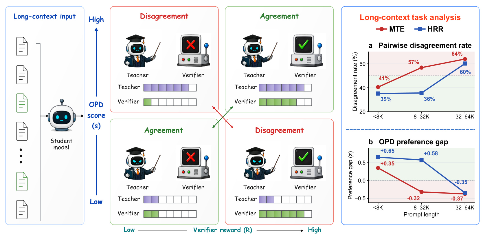
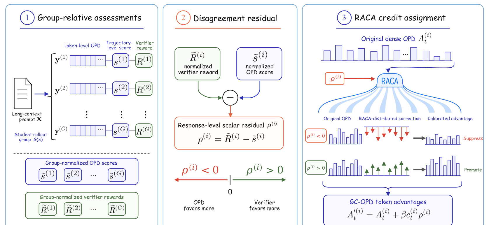
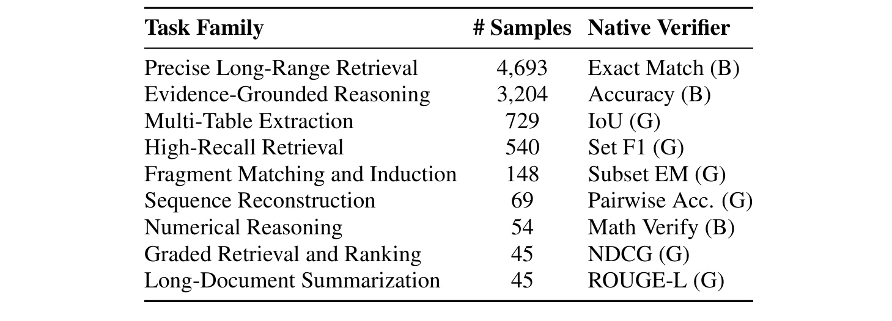
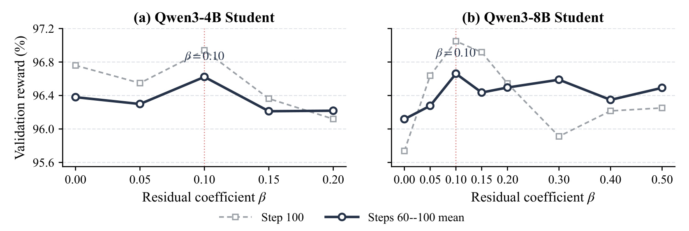
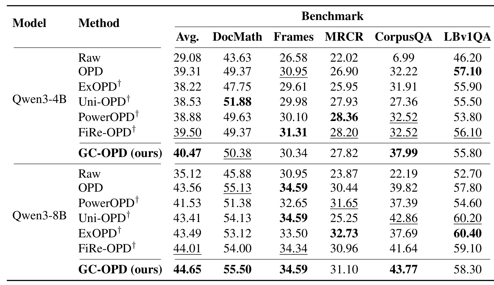
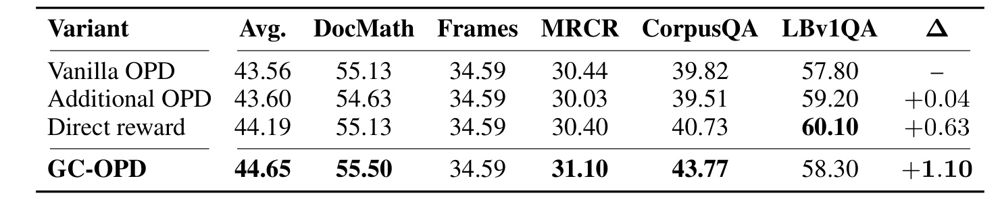
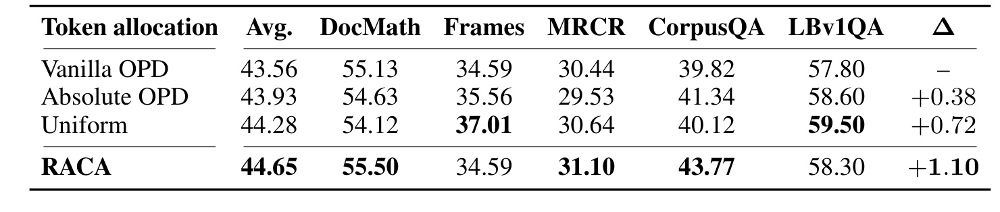
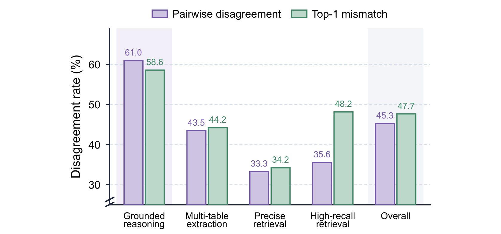
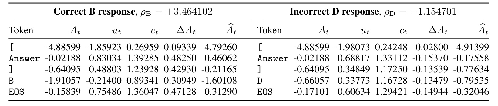
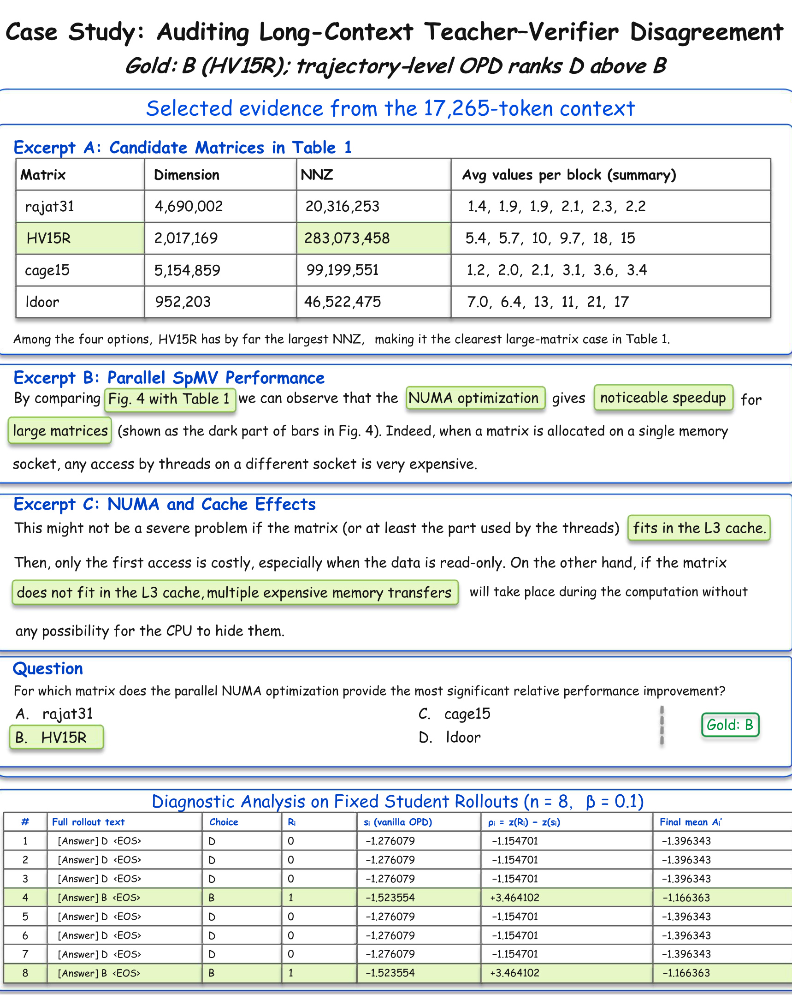

Beyond Teacher Likelihood：面向长上下文推理的分组校准在线策略蒸馏
- 英文标题： Beyond Teacher Likelihood: Group-Calibrated On-Policy Distillation for Long-Context Reasoning
- 方法简称： GC-OPD（Group-Calibrated On-Policy Distillation）
- 作者： Zhu Zhang、Jixun Wang、Xiaoang Xu、Xiaorong Wang、Zihan Zhou、Zhiyuan Wang、Shuo Wang、Chaojun Xiao、Yuezhi Zhou
- 机构： 第一作者主机构为清华大学；合作机构包括北京邮电大学、OpenBMB
- 公开时间： 2026-08-19（arXiv v1）
- 论文入口： arXiv:2608.19181
- 代码： SolereZhang/GC-OPD（已核验）
- 研究方向： on-policy distillation、长上下文、verifier、token credit assignment
1. 背景和问题
在线策略蒸馏（On-Policy Distillation，OPD）不让学生照抄教师预先生成的一套固定答案，而是先由学生当前策略采样回答，再让更强教师为学生真正访问到的 token 逐个评分。这样做有两个明显优点：监督落在学生自己的生成分布上，减少离线蒸馏的分布偏移；每个 token 都能得到教师与学生对该 token 支持度之差，信号比“整条回答对或错”稠密得多。近年来的 ExOPD、FiRe-OPD、PowerOPD 等工作分别改造教师目标、过滤轨迹、重加权 token 或约束奖励几何，但这些改造的共同出发点仍是教师对采样 token 的概率判断。
在长上下文任务中，逐 token 的教师支持可能偏爱局部看似合理的回答，而这些回答会漏掉分散在输入各处的证据，或违反任务的全局约束。
这句话来自论文摘要与引言，也是 GC-OPD 的问题起点。长上下文正确性往往不是由某个局部短语决定：模型需要从相隔很远的位置找齐证据、处理指代、合并多个表格或满足输出的整体约束。教师在给定学生前缀时评估下一个已采样 token，能判断其局部概率是否比学生更高，却不必然知道整条回答最终是否覆盖了任务要求。任务 verifier 则从相反方向工作：它在回答级检查完成度，可以给二值正确性，也可以用 IoU、Set F1、NDCG、ROUGE-L 等连续分数表示部分成功。于是两者会对同一组回答给出相反排序——论文称之为 teacher–verifier disagreement。
作者先不训练 GC-OPD，而是在固定的学生回答上做诊断，避免把训练后的策略变化与信号失配混在一起。分析使用 GoLongRL 中 Multi-Table Extraction（MTE）与 High-Recall Retrieval（HRR）两类分布式证据聚合任务，分别覆盖 751 与 2,908 个 prompt；Qwen3-8B 每题采样八条回答，Qwen3-30B-A3B-Thinking-2507 对这些回答提供 token log probability，原生 verifier 给出 graded reward。对 verifier 分数不同的回答对，pairwise disagreement rate 统计 OPD 排序反向的比例；OPD preference gap 则以组内 OPD 标准差为单位，衡量沿 verifier 正确排序方向的平均分差。前者看“冲突出现多少”，后者看“教师平均把力量推向哪边”。

Figure 1 给出的不是单个平均数，而是随 prompt 长度分桶的两条一致趋势。MTE 的 pairwise disagreement 从小于 8K 时的 40.6% 升到 32–64K 时的 64.0%，OPD preference gap 从 +0.35 降到 −0.37；HRR 对应地从 35.2% 升到 60.2%，gap 从 +0.65 降到 −0.35。正 gap 表示 OPD 总体仍偏向 verifier 更喜欢的回答，负 gap 则说明较差回答反而获得更高 OPD 轨迹分数。两项指标从频率和方向互相印证，但证据边界也很明确：这是两个任务上的相关性诊断，不能据此断言上下文长度是唯一因果变量。
已有 verifier-aware OPD 已经证明 outcome feedback 有补充价值，却采用不同接口：SCOPE 按正确/错误路由目标，MOPD 把同组成功与失败回答放进教师条件，Uni-OPD 用 outcome class margin 校准轨迹回报，SG-OPD 做 token 符号门控，Reward-Weighted OPD 则筛选 verifier 可通过的 rollout。论文认为仍缺少一个同时满足三点的接口：保留 graded reward 的组内距离；把 verifier 与 OPD 已表达的相对偏好先做“差分”，避免直接相加重复奖励；再把回答级差分以 token 相关、符号安全的方式分配下去。GC-OPD 因而不是替换教师信号的强化学习目标，而是在原始 OPD 优势之上增加一项经过分组校准的残差修正。
这里还有一个容易忽略的设计选择：论文比较的是同一输入下的回答，而不是把来自不同任务的 verifier 数字塞进统一回归器。二值 reward 与连续 F1 的绝对间隔没有天然可比性，同一任务中简单题和难题的 reward 分布也可能不同。组内相对化把问题收缩为“在这八条回答中，教师和 verifier 分别更偏爱谁”，因此无需估计跨任务 reward scale；同时它要求每组确实存在差异。若八条回答全对、全错，或教师对它们的轨迹分数几乎一致，校准就没有可靠参照，方法按数值保护规则退回 vanilla OPD。
这种退化不是异常分支的掩饰，而是校准语义的一部分：GC-OPD 只在两种评估都能形成组内相对结构时介入。它不会凭一个完全相同的二值 reward 猜测哪条失败回答更接近正确，也不会在教师轨迹分数零方差时人为制造 token 优先级。相应地，采样多样性、verifier 分辨率与每组有效比较对数量，都是部署训练管线时必须额外监控的统计量。
2. 方法
2.1 从 vanilla OPD 到轨迹级教师评估
设长上下文输入为 (x)，可训练学生为 (pi_\theta)。每次更新开始时复制并冻结旧策略 (pi_{\theta_{\mathrm{old}}})，由它对同一个输入采样 (G) 条回答；第 (i) 条回答记为 (y^{(i)}=(y^{(i)}1,\ldots,y^{(i)}))。教师 (pi_T) 不另行生成答案，而是在学生实际采样的前缀上评价已出现 token。vanilla OPD 的逐 token 优势是：}
符号解释： 第一项是 teacher logprob，表示教师对学生已采样 token 的支持；第二项是冻结 rollout student logprob，表示生成该 token 的旧学生对它的支持。若 (A^{(i)}_t>0)，教师比学生更认可该 token，clipped policy surrogate 会提高其概率；若为负则降低。对从旧学生分布采样的 token 求期望，该量等于旧学生到教师的负向 reverse KL。因此它是合理、稠密的蒸馏贡献，却只说明“教师相对学生怎么看这个 token”，并不等同于回答完成了任务。
为了与回答级 verifier 比较，论文把一条轨迹上的 token 优势取均值：
符号解释： (T^{(i)}) 是有效响应 token 数，(s^{(i)}) 是 trajectory-level OPD score。取均值而不是求和，避免较长回答仅因 token 多就得到更大绝对分数。它可理解为教师相对旧学生对整条已采样回答的平均支持，但仍不是 verifier reward (R^{(i)})。GC-OPD 后续始终保留每个 (A^{(i)}_t) 作为基项，校准的是回答间相对偏好，而非删掉原始蒸馏信号。
2.2 分组相对评估与有符号分歧残差
原始 (R^{(i)}) 与 (s^{(i)}) 量纲不同：前者可能是二值、F1 或 NDCG，后者是 log probability gap 的平均。GC-OPD 不在不同任务或不同 batch 间硬设统一阈值，而是只在同一 prompt 的 (G) 条 rollout 内分别做 z-score：
符号解释： (mu_R,\sigma_R) 是该 rollout group 内 verifier reward 的总体均值与总体标准差，(mu_s,\sigma_s) 对 trajectory OPD score 同理。分别标准化消除了原始尺度，但不会只保留名次：若 verifier 提供连续分数，(widetilde R) 仍保留同组回答间相对间距。代价是所有含义都依赖组内对照，不能把一个 prompt 的 z-score 当作另一个 prompt 的绝对难度。
论文的核心量不是直接加入 (widetilde R)，而是二者之差：
符号解释： (\rho^{(i)}) 是 signed teacher–verifier disagreement residual。若 (\rho^{(i)}>0)，该回答在 verifier 排名中的位置高于教师轨迹分数给它的位置，训练应补偿性晋升；若 (\rho^{(i)}<0)，教师相对过度偏爱它，应抑制。若两种组内评估一致，残差接近零，就不重复强化 OPD 已经表达的偏好。这正是 residualization 相对“把 verifier reward 再加一次”的差异。
对同组回答 (i,j)，若 verifier 严格偏好 (i)，但 OPD 严格偏好 (j)，则：
符号解释： 在 (sigma_R,sigma_s>0) 时，第一项为正，而由于 (s^{(i)}<s^{(j)})，减去第二个负差后仍为正。因此 residual 的相对排序与 verifier 一致，能把后续修正推向 verifier 更高的回答。这个结论不声称 residual 是无偏价值估计；它只保证严格排序冲突时的方向一致。

Figure 2 把输入输出分成三个阶段：先从每条响应的 token OPD 得到 (s^{(i)})，并与同组 verifier reward 各自归一化；再用差值生成一个回答级标量 (\rho^{(i)})；最后把该标量分给响应 token，并与原始 (A^{(i)}_t) 相加。图中 (\rho<0) 的红色修正整体抑制，(\rho>0) 的绿色修正整体晋升，但每个 token 的箭头长度不同。这个结构说明 GC-OPD 只改变 advantage construction，教师评分路径和 actor 的 clipped surrogate 都不需要重写。左列还强调两种 z-score 必须在同一 prompt 的 rollout group 内求取，不能把不同任务的原始 verifier 数值直接拼在一起；中列的零点说明只有评估差异才触发校准；右列则直观区分原始 OPD 柱、RACA correction 与最终 calibrated advantage，三者并非互相替代。
2.3 RACA：把响应级残差分配到 token
回答级 (\rho^{(i)}) 只有方向和幅度，没有告诉训练器哪几个 token 应承担更多修正。直接把同一残差均匀加给所有 token 是一个可行基线，但会丢掉原有稠密 OPD 的响应内结构。Relative-Advantage-based Credit Assignment（RACA）先计算 token 相对本响应均值的标准化优势；采用附录中的数值保护写法：
符号解释： (sigma^{(i)}_A) 是该回答有效 token 优势的总体标准差，(\tau_T=10^{-6}) 是保护阈值。(u^{(i)}_t>0) 只表示该 token 的 OPD 优势高于本响应平均，低于平均则为负。论文明确提醒：RACA 的相对优势不是 token 正确性，也不是该 token 对最终结果的因果重要性。 它只是利用现有 OPD 信号决定残差分配比例。
随后用单调、正值、有界的映射生成 token credit：
符号解释： (u=0) 时 credit 为 1；相对 OPD 优势更高的 token 获得更大 credit，更低的获得更小 credit。因为 (c) 始终为正，它只能缩放 (\rho)，不会把正 residual 变成负修正或反之；tanh 又把极端 token 的倍数限制在 2 以内。最终优势为：
符号解释： 第一项仍是原始 OPD，第二项才是 RACA 分配的校准量；(\beta\ge 0) 控制 residual 强度，实验统一选择 (\beta=0.10)。当 (\beta=0) 时严格回到 vanilla OPD。这里的 token credit 不是让高 (A_t) token 永远增加概率：若整条回答 (\rho<0)，高 credit 反而让它承担更强负修正。RACA 保留的是响应内 signed OPD 排序，不是简单偏爱绝对值大的 token。
2.4 数值保护与训练更新接口
实际实现先检查组内标准差。若 (sigma_R\le\tau_G) 或 (sigma_s\le\tau_G)，其中任一评估没有足够组内变化，全部 (\rho^{(i)}) 置零，避免 z-score 放大数值噪声，该组退化为 vanilla OPD；实验取 (\tau_G=10^{-6})。在回答内部，若 token 少于两个或 (sigma_A^{(i)}\le\tau_T)，就令 (u=0,c=1)。加入 residual 后再做最终裁剪：
符号解释： (widehat A) 是真正送入 actor clipped surrogate 的 advantage，(a_{\max}) 控制极端 teacher/student logprob gap 或 residual 的影响。算法每步依次冻结旧学生、每 prompt 采样八条 rollout、计算原生 verifier reward、用教师与旧学生算 detached (A_t)、形成组内 residual、计算 RACA 并裁剪，然后沿用 vanilla OPD 的 policy update。给定原本训练流水线已经产生的 OPD 优势与 verifier reward，新增部分只有聚合、标准化和逐元素变换，不增加教师或学生 forward pass。 训练与推理也应分开理解：训练阶段仍需教师 token logprob 和任务 verifier；如果 verifier 昂贵、易被攻击或只能给粗糙二值标签，GC-OPD 会继承这些限制。部署推理时学生网络结构、提示和解码并未增加 GC-OPD 模块，因而论文没有声称额外推理时延。另一方面，“无额外 teacher/student forward”不等于整次后训练便宜：论文每个训练 run 使用八张 80GB H800 或 H100，长上下文 rollout 与教师打分仍是主要计算负担。
3. 实验结果
3.1 实验设置与评价口径
学生从官方 Qwen3-4B 与 Qwen3-8B checkpoint 初始化，均用 no-thinking 模式生成；教师为 Qwen3-30B-A3B-Thinking-2507，只对学生采样 token 打分。训练集从 GoLongRL 保留不超过 32K token 的 prompt，共 9,527 条、九个任务族。Precise Long-Range Retrieval 有 4,693 条，Evidence-Grounded Reasoning 有 3,204 条，两者合计 82.9%，说明训练分布并不均衡。九类中三类 verifier 是 binary reward，六类是 graded reward，这一混合正好检验组内独立标准化能否不做跨任务手工标定。

Table 1 把“多任务”具体化：Exact Match、Accuracy、Math Verify 给二值反馈，IoU、Set F1、Subset EM、Pairwise Accuracy、NDCG、ROUGE-L 给连续分数。样本量也揭示结论边界——Numerical Reasoning 只有 54 条，Graded Retrieval and Ranking 与 Long-Document Summarization 各 45 条，训练更新主要由前两大任务族驱动。GC-OPD 虽能在每个 prompt 组内处理不同尺度，但标准化并不会自动修复任务采样失衡；复现时应同时核对每类 prompt 的占比与 informative group 比例。
所有训练方法共享 100 steps 预算。每步抽 32 个 prompt，每个 prompt 生成八条回答；最大 prompt 32,768 token，训练响应上限 10,240，学习率 (10^{-6})，PPO epoch 为 1，clip ratio 为 0.2，随机种子 42。actor/reference sequence parallelism 与 rollout tensor parallelism 均为 8。附录报告训练文件长度中位数 9,923、P90 26,940、最大 32,766。比较对象包括 Raw、vanilla OPD、ExOPD、Uni-OPD、FiRe-OPD、PowerOPD 与 GC-OPD；带 † 的结果是各方法“主要训练信号机制”在共享长上下文设置中的实现，不应当作原论文完整 recipe 的复现排名。
共享实现的细节决定了这张对照表能回答什么。ExOPD 用冻结的对应 Qwen3 初始 checkpoint 作为 student-base reference，外推系数为 1.25；Uni-OPD 在同组正确集与错误集之间施加 0.4 的双向 margin shift，并保留 teacher–student logprob gap 阈值 10，但省略原方法的离线/在线数据平衡；PowerOPD 用指数 100 的 bounded probability-power difference；FiRe-OPD 在 actor micro-batch 内做 20 分位轨迹过滤，再以 teacher confidence 和 student confusion 重加权。每个方法仍生成自己的 on-policy 轨迹，所以控制的是初始化、数据、预算与优化器，而不是强迫它们看到完全相同的回答。
评测覆盖五个长上下文 benchmark。DocMath 包括 200/100/200/300 四个 split，每题取规则检查与语义 judge 的最大二值结果；FRAMES 有 824 题，取 cover exact match 与 judge 的最大判定；MRCR 在 0–128K、2/4/8 needles 上先要求随机前缀完全正确，再算字符级序列相似度；CorpusQA 覆盖中英金融、英语教育与英语地产四域，用语义等价二值判断；LBv1QA 对 NarrativeQA、Qasper、HotpotQA、2WikiMultihopQA、MuSiQue 五个各 200 条子集做 macro mean。最终 Avg. 是五列的简单算术平均，不按样本数加权。服务上限为 120K 输入、131,072 模型长度、YaRN factor 4、最多生成 8,192 token，超长输入从中间截断并保留首尾。
β 不用这五个测试集选择。作者在构造训练集前从有序 GoLongRL shard 预留最前 256 条，经过 32K 过滤剩 231 条且不与训练重叠；该 holdout 只包含 HRR。用每题一条随机回答，比较 step 100 与 steps 60/70/80/90/100 均值，两个学生规模都选择 (\beta=0.10)。

Figure 3 显示 4B 和 8B 两个面板的最优点都落在 0.10，且最终检查点与后五次检查点均值给出相同选择，这比只报告一次终点更稳妥。曲线也显示收益并非随 β 单调增加：8B 在 0.30 附近的 step-100 reward 明显下降，过强校准可能盖过原 OPD。图中虚线方块与实线圆点分别承担终点值和后五个检查点均值，二者在局部波动上并不完全重合；因此共同峰值比单条曲线峰值更能支撑选择。4B 只搜索到 0.20，8B 扩到 0.50，两块横轴范围并不相同，读图时不应按同一水平位置直接比较远端曲线。需要保留的限制是，选参集只有 HRR 一个任务族且只报告一个随机种子；“跨规模共用 β”得到支持，但“跨所有长上下文任务普适”尚未被该图证明。
3.2 两个模型规模的主结果

Table 2 的主结论应首先按平均口径读取。Qwen3-4B 的 Raw 为 29.08，vanilla OPD 提高到 39.31，GC-OPD 再到 40.47；Qwen3-8B 从 Raw 35.12 到 OPD 43.56，再到 GC-OPD 44.65。按表中四舍五入值，GC-OPD 相对 OPD 分别增加 1.16 与 1.09 分。它在两个规模上都是共享设置方法的最高五任务平均，但不是每一列都赢：4B 的 FRAMES 30.34 低于 FiRe-OPD 31.31，LBv1QA 55.80 低于 OPD 57.10；8B 的 LBv1QA 58.30 低于 ExOPD 60.40，说明平均增益不能解释为全面支配。
收益更集中在结构化推理和证据聚合。4B 相对 OPD：DocMath 49.37→50.38，MRCR 26.90→27.82，CorpusQA 32.22→37.99，而 FRAMES 30.95→30.34、LBv1QA 57.10→55.80。8B 对应为 DocMath 55.13→55.50、MRCR 30.44→31.10、CorpusQA 39.82→43.77，FRAMES 34.59 持平、LBv1QA 57.80→58.30。CorpusQA 两个规模分别提高 5.77 与 3.95，是平均收益的主要来源；这与“回答级 verifier 更能发现跨证据全局完成度”相容，但表格本身不能证明某个 benchmark 的提升一定由该机制独占造成。
横向基线还提供两个提醒。4B 的 FiRe-OPD Avg. 为 39.50，比 vanilla OPD 高 0.19；8B 为 44.01，比 OPD 高 0.45，仍低于 GC-OPD。Uni-OPD 在 8B 的 LBv1QA 达 60.20，却在 MRCR 只有 25.25；ExOPD 在 8B 的 MRCR 32.73 与 LBv1QA 60.40 都较强，但 CorpusQA 37.69 偏低。论文因此主张的是异质任务上的更好平衡，而不是所有局部指标的新上界。Raw 到 OPD 的大幅提升说明完整长上下文后训练管线有效，OPD 到 GC-OPD 的约 1.1 分增量才是本方法需负责的部分。
五任务 Avg. 还隐藏了样本量和 scorer 的差异：FRAMES 有 824 题，LBv1QA 是五个 200 题子集的宏平均，MRCR 又把多种针数和上下文长度合在一起，但最终每列权重都相同。GC-OPD 在 CorpusQA 的大幅增益因此会以一整列的权重进入均值，不会因该 benchmark 样本数多或少改变贡献。这个口径有利于避免大数据集淹没其他任务，却也意味着 1.1 分平均提升不是“所有测试样本准确率增加 1.1 个百分点”。复现报告应同时保留每列、各列内部聚合和简单平均，不能只发布一个 Avg.。
3.3 响应级信号、token 分配与跨任务诊断
第一组消融固定 Qwen3-8B、100 steps、RACA 和 (\beta=0.10)，只替换加在原始 (A_t) 上的信号。Additional OPD 再加一个 credit-modulated (A_t)；Direct reward 直接加组归一化 (widetilde R)；GC-OPD 加 (\rho=\widetilde R-\widetilde s)。

Table 3 中 vanilla OPD Avg. 为 43.56，Additional OPD 43.60，只有 +0.04，说明单纯放大 OPD 派生项几乎不能解释收益。Direct reward 达 44.19（+0.63），证明 verifier outcome 确实补充了教师稠密信号；signed residual 再到 44.65（+1.10），在系数和 credit 相同的条件下比 direct reward 高 0.46。尤其 CorpusQA 从 39.82 到 40.73，再到 43.77，支持先扣除 OPD 已表达相对偏好的校准方式。不过 LBv1QA 的 Direct reward 为 60.10，高于 GC-OPD 58.30，残差化仍是平均意义上的折中。
第二组消融固定 signed residual 和 (\beta=0.10)，只改变 (c_t)。Uniform 令所有 token credit 为 1；Absolute OPD 按 (|A_t|) 相对均值分配并裁到 [0,5]；RACA 使用 signed 相对优势经 tanh 映射。

Table 4 显示 Uniform 已从 43.56 提到 44.28（+0.72），所以 residual 本身是主要贡献；RACA 进一步到 44.65（+1.10），相对 Uniform 再加 0.37。Absolute OPD 只有 43.93（+0.38），论文的解释是绝对值会给强负 OPD token 也分配很大 credit，破坏 signed 响应内排序。但单项仍有交换：Uniform 的 FRAMES 37.01、LBv1QA 59.50 高于 RACA 的 34.59、58.30；RACA 在 DocMath、MRCR、CorpusQA 更高。由此更准确的结论是 RACA 改善五任务平均与目标类型的平衡，而非对 uniform 每列都占优。
附录还把固定回答诊断扩到四个样本量至少 500 的任务族，并给出九类总体 macro 结果。这里的 top-1 mismatch 指组内最高 trajectory OPD 回答未达到最高 verifier reward 的 prompt 比例，与 pairwise disagreement 关注的所有异分回答对不同。

Figure 4 中 Grounded reasoning 的 pairwise/top-1 分别为 61.0%/58.6%，Multi-table extraction 为 43.5%/44.2%，Precise retrieval 为 33.3%/34.2%，High-recall retrieval 为 35.6%/48.2%，九任务总体为 45.3%/47.7%。分歧并非只存在于 MTE 与 HRR，但幅度明显依任务而变；High-recall 的 top-1 mismatch 明显高于 pairwise rate，也说明“多数回答对是否反序”和“最受教师偏爱的回答是否达成最好 outcome”是两种不同风险。需注意 MTE/HRR 此处只汇总小于 32K 的固定回答，而 Figure 1 还分析到 64K；该图刻画的是信号冲突普遍性，不是各任务训练收益，更不能推出 61% 分歧就必然产生更大 GC-OPD 增益。
3.4 17,265-token 案例的可审计计算
论文从 GoLongRL 选一个 17,265-token prompt：问题询问四个矩阵中哪一个从并行 NUMA 优化获得最大相对改进，原生标签为 B（HV15R）。上下文显示 HV15R 的 NNZ 最大，并给出大矩阵、NUMA 与缓存效应的相关描述，但作者谨慎说明这些片段本身不是直接 speedup 测量。用官方 Qwen3-8B base 独立重采样八条 no-thinking 回答后，六条选 D、两条选 B。错误 D 的 vanilla (s=-1.276079) 高于正确 B 的 (-1.523554)，正好构成 teacher–verifier 排序冲突。
对正确 B，(R=1,\rho=+3.464102)，最终 mean (widehat A) 变为 −1.166363；对错误 D，(R=0,\rho=-1.154701)，最终 mean (widehat A) 为 −1.396343，于是校准后的相对顺序翻回 B 高于 D。下面的 token 表把这个响应级变化拆开。

Table 8 说明同一条轨迹的所有 token 接受相同符号 residual，但幅度由 credit 改变。正确 B 回答的 Answer token 从 (A_t=-0.02188) 经 (u_t=0.83034,c_t=1.39285) 得到 +0.48250 修正，变为 +0.46062；选项 B token 因 (u_t=-0.21400,c_t=0.89341)，只加 +0.30949。错误 D 回答的 Answer token 得 −0.15370，选项 D token 得 −0.13479。左右两块首个方括号 token 的 credit 都较小，显示 credit 由各自响应内分布决定，即便原始 token 文本相同也会随响应统计量变化。表中数值经四舍五入，排序检查用未舍入值；它展示 credit 的计算行为，并不把某个 token 宣判为语义上正确或错误。

Figure 5 是论文原生的单个复合对象：上半部排列三段证据和四选一问题，下半部列出八条 rollout 的选择、verifier reward、vanilla OPD trajectory score、residual 与最终 mean advantage。绿色两行 B 的原始 (s) 比六行 D 更低，却得到 +3.464102 residual；D 得到 −1.154701 residual，GC-OPD 因而纠正组内相对更新方向。八条回答只出现两个唯一文本，使组内 z-score 的数值可以人工核对，也解释了正 residual 绝对值为何大于负 residual。作者把它定位为 auditable signal computation，而非新增统计显著性证据；样例只有一题，且所摘证据与“最大相对提升”之间仍存在推断距离，不能替代大样本评测。
4. 总结
4.1 如何理解贡献
GC-OPD 的贡献可概括为一个清晰接口：保留教师—学生 logprob 差带来的稠密 (A_t)，把 verifier reward 与 trajectory OPD score 在每个 rollout group 内分别标准化，用 (\rho=\widetilde R-\widetilde s) 只校准二者分歧，再用正值有界的 RACA credit 分配到 token。它没有引入额外教师/学生前向，也不改变部署时学生结构。实验中 4B/8B 相对 vanilla OPD 的五任务平均提升约 1.1 分，signal ablation 把主要收益定位到 signed residual，allocation ablation 则显示 RACA 在 uniform residual 之上还有较小增量。
对工程实践，更值得迁移的是“稠密代理信号与全局任务指标先做相对差分”的思想。长答案生成、结构化抽取、工具链完成度、生成式排序或带约束的 slate 生成，都可能出现 token likelihood 很好而整体约束失败。若能为同一输入采样一组候选，并有可信的分级 verifier，就可以检查代理分数与任务分数的组内排序冲突，再决定是否采用 residual 校准。但 GC-OPD 的 RACA 只利用 OPD 相对优势，不提供过程监督；需要定位真实错误步骤的场景仍应考虑 step label、辅助 continuation 或因果归因方法。
4.2 局限、风险与跟进
局限与风险：
- 长度恶化诊断来自 MTE、HRR 两类固定回答，展示相关趋势而非上下文长度的因果效应；跨任务 Figure 4 也只报告冲突率，不等于训练增益。
- GC-OPD 依赖 verifier 质量。被奖励投机、尺度粗糙或系统性偏置的 verifier 会把错误的回答级排序写入 residual；组内零方差时方法还会直接退化为 OPD。
- 训练混合高度偏向两大任务族，β 的 231 条 holdout 又全部来自 HRR；论文只给随机种子 42，未报告多种子置信区间，约 1.1 分平均增益的方差尚不清楚。
- 带 † 的 ExOPD、Uni-OPD、FiRe-OPD、PowerOPD 是共享设置下的核心机制实现，不是各自完整原始 recipe；横向数字适合做受控机制比较，不宜当作方法总榜。
- “无额外前向”只指已有 OPD/verifier 输出之后的校准计算。八张 80GB H800/H100、长上下文 rollout、教师 token 打分仍昂贵；论文没有训练吞吐、墙钟时间或在线系统实验。
- RACA 的 (u_t) 是相对 OPD 支持，不是 token correctness。它可能把较大 credit 分给语义上并非关键的 token，Table 4 的混合单项结果也说明这一分配仍有改进空间。
后续跟进：
- 用已公开代码复现 Qwen3-8B 的 Table 3/4，至少增加三到五个随机种子，记录五任务均值、各任务方差、informative group 比例和 residual 分布。
- 在 HRR 之外建立多任务 β holdout，比较全局固定 β、按任务 β、按组方差自适应 β，确认 0.10 是否只是单一任务选择的偶然结果。
- 直接审计 verifier：统计 reward 与人工正确性、reward hacking、组内零方差率，并在错误 verifier 下测量 residual 是否放大偏差。
- 将 RACA 与 uniform、absolute OPD 之外的分配方式比较，例如基于 verifier sensitivity、过程标签或有限辅助 continuation 的 credit，同时保持响应级 signed residual 不变。
- 报告真实训练成本与长上下文长度分层收益，并检查 32–64K、64–128K 上的增益是否与 Figure 1 的 disagreement 趋势一致。
总体而言，这篇工作最有价值的地方不是宣称教师概率无用，而是把教师稠密监督与任务级验证之间的冲突显式写成可审计的组内残差。现有证据支持它在共享长上下文后训练设置中改善平均表现；更强的结论仍需要多种子、更广 verifier、多任务选参和成本报告。